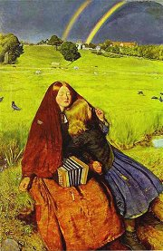
Millais: Slepá dívka
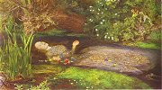
Millais: Ofélie
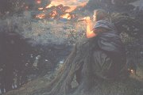
Huges: Fantazie za soumraku
|
LITERÁRNÍ FANTAZIE
Nìkteøí spisovatelé dávali pøed realistickou metodou pøednost nespoutané fantazii. Ve druhé polovinì 19. století byl velmi populární novoromantismus. Vznikají nesmrtelné hororové (Stokerùv Drákula), detektivní (Doylùv Sherlock Holmes), dobrodru�né (Stevensonùv Ostrov pokladù) nebo milostné (Rostandùv Cyrano) pøíbìhy.
Knihy pro dìti jsou plné bláznivıch øíkanek (Lear) a neskuteènıch zápletek (Carroll). Pro tuto literaturu se v�ilo oznaèení nonsens (nesmysl). Další autoøi píší dobrodru�né pøíbìhy pro mláde� (May, Kipling). Objevují se zakladatelská díla �ánru science fiction [sajens fikšn], sci-fi. Vìdecko-fantastické literatuøe se vìnoval Verne nebo Wells. Knihy pro dìti a mláde� doprovázela øada nádhernıch ilustrací.
V roce 1848 vzniklo v Anglii Bratrstvo prerafaelitù. Prerafaelité opovrhovali akademickou malbou a pod vlivem vıznamného teoretika Johna Ruskina hledali inspiraci v rané italské renesanci a umìní „pøed Raffaelem“. Inspirovali se mystickou tvorbou Williama Blakea. Námìty nacházeli v literatuøe, mıtech a nábo�enství (Shakespeare, artušovské legendy, Bible). K prerafaelitùm patøili John Everett Millais, Dante Gabriel Rossetti, Edward Burne-Jones, William Holman Hunt. Blízko k nim mìl také Arthur Huges.
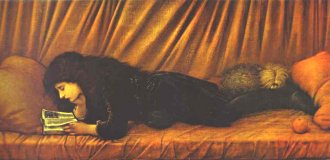
Burne-Jones: Portrét Katky Lewisové
|
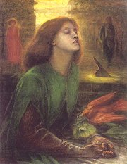
Rossetti: Beata Beatrix
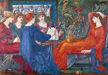
Burne-Jones: Laus Veneris
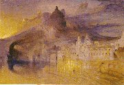
Ruskin: Amalfi
|
Hans Christian Andersen
(1805-1875)
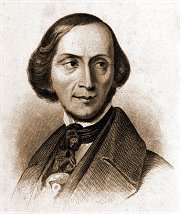
Dánskı spisovatel Hans Christian Andersen byl synem chudého ševce. Kromì Pohádek vyprávìnıch dìtem (Pohádky a povídky) napsal román Improvizátor nebo vzpomínkovou knihu Pohádka mého �ivota.
|
Hans Christian Andersen: Pohádky vyprávìné dìtem
Pohádky vyprávìné dìtem vycházely postupnì 6 let. Celkem zahrnují pøes 150 pohádek a povídek. Nìkteré z nich pocházejí z lidového vyprávìní, ale vìtšinu si Andersen zcela vymyslel. Jeho pøíbìhy mají pohádkovou atmosféru. Vystupují v nich králové, princezny, nadpøirozené bytosti i zvíøata. Není zde nouze o kouzla. Ne v�dy ale dobro vítìzí nad zlem a nìkteré pohádky jsou velmi smutné. K nejznámìjším patøí Malá moøská víla, Princezna na hrášku, Císaøovy nové šaty, Snìhová královna, Ošklivé kaèátko, Stateènı cínovı vojáèek, Køesadlo nebo Dìvèátko se sirkami.
|
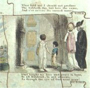
Dobová hraèka
Které Andersenovy pohádky umíš pøevyprávìt?
|
Edward Lear (1812-1888)
Anglièan Edward Lear [lír] pracoval v Britském muzeu. Vìnoval se kreslení zvíøat a rostlin, uèil dokonce královnu Viktorii! Cestoval po Evropì, Africe a Asii. �il sám, ale pro dìti svého mecenáše hrabìte z Derby psal nonsensové básnì, které shrnul do sbírek Kniha nesmyslù, Verše k smíchu nebo Nesmyslné písnì, pøíbìhy, rostlinopis a abeceda.
Namaluj mnohoptákonì jednokvìtého, buchtónii vı�ivnou, èibukvici sliènou, tiktak hodináøskı, lahodu fašírkovou, ohavìnku hnusonosnou, šufandlík mísovı nebo podiviznu miminokvìtou.
Vymysli po Learovì vzoru názvy dalších rostlin a popiš je.
|
Edward Lear: Kniha tøeskù a pleskù
V Knize tøeskù a pleskù (A Book of Nonsense) Lear vyu�il oblíbenou lidovou formu zvanou limerick. Jedná se o krátké pìtiveršové básnì s rımovım schématem aabba. Autor v nich dal prùchod své nespoutané fantazii a smyslu pro humor. Vymıšlel si nová slova a stále nové komické situace pro rozmanité postavy.
„Tøipskı Kulimrku! Inkle cinkle poblbokl mù�ebachr? Vóbr! Krsa tøimpl vóbr. Okul škrab biblibangibou vidl šibl togo-togo velmaèenstvo amsky flamsky damsky krohoutiprk švix. Buchy stısky basòa. Majdapip“ (Learùv dopis)
|
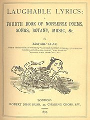
Learova kniha z roku 1877
Nakresli ilustraci k Learovì limericku.
Napiš vlastní limerick.
Vysvìtli vıznam slova „ombliferózní“.
|
Lewis Carroll (1832-1898)
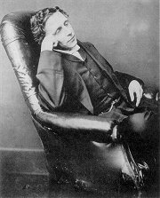
Anglièan Charles Lutwidge Dodgson [èárlz latvid� dod�sn] je známìjší pod literárním pseudonymem Lewis Carroll [lúis kerel]. Vystudoval matematiku na univerzitì v Oxfordu, kde pozdìji uèil. Kromì odbornıch publikací o logice psal nonsensové básnì a pøíbìhy. Patøil rovnì� k prùkopníkùm fotografování. Jinak uzavøenı èlovìk si velmi rozumìl s dìtmi. Dcerám dìkana, pøedevším osmileté Alici Liddellové, vyprávìl veselé pøíbìhy, které vyšly ve dvou knihách – Alenèina dobrodru�ství v podzemní øíši a Za zrcadlem a co tam Alenka našla.
|
Lewis Carroll: Alenèina dobrodru�ství v øíši divù a za zrcadlem
Obì Carrollovy prózy vycházejí vìtšinou spoleènì. Spojuje je postava Alenky, která pro�ívá nejnesmyslnìjší pøíhody s podivnımi bytostmi. Nejprve vklouzne za Bílım králíkem do jeho nory. Díky kouzlùm se Alenka podle potøeby zvìtšuje nebo zmenšuje. V podzemním svìtì se setkává s koèkou Šklíbou, která støídavì mizí a zase se zviditelòuje, Vévodkyní nebo Srdcovou královnou, která chce neustále nìkomu srazit hlavu. Druhı pøíbìh pøipomíná šachovou partii. V kraji za zrcadlem se z Alenky stává pìšec, kterı se na konci promìní v královnu, mezitím potkává Valihracha (Hupity Dupity), Èernou a Bílou královnu, Tydlitáka a Tydlitka a další obyvatele tohoto podivného svìta. Nakonec se uká�e, �e vše byl pouhı sen. Bláznivé situace a nesmyslné dialogy se v obou knihách støídají s veselımi dìtskımi øíkankami.
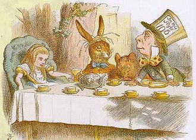
John Tenniel: Alenka v øíši divù
|
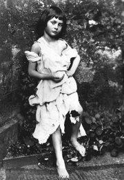
Alice Liddellová jako �ebraèka na Carrollovì fotografii
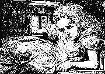
Alenka v Carrollovì podání
Na èem je zalo�en Carrollùv humor?
Kterı z pøekladù básnì Jabberwocky se ti líbí více – �vahlav nebo Tlachapoud?
Srovnej dva èeské pøeklady Alenky. V èem se liší?
Co tì pøekvapilo pøi srovnávání obou textù? Proè?
Poznáš postavy na Tennielovì ilustraci?
Které další postavy vystupují v Carrollovì knize? Charakterizuj je.
Zdramatizujte Alenèiny pøíhody.
|
Christian Morgenstern
(1871-1914)
Nìmeckı básník Christian Morgenstern [kristiján morgnštern] psal veselé nonsensové verše, které shrnul do sbírek Šibenièní písnì a Palmström. O vlastní tvorbì tvrdil, �e jde o básnì psané velkım dítìtem pro velké dìti. Po dlouhé nemoci zemøel na tuberkulózu. Posmrtnì vyšly ještì nonsensové sbírky Palma Ku�el a Šlasi.
Zhudebnìné básnì Veliké Lalulá a Košilela nazpívala Bára Basiková se skupinou Stromboli. Jak na tebe pùsobí?
Pøipravte recitaèní pásmo z nonsensové tvorby Leara, Carrolla, Morgensterna a dalších autorù.
|
Christian Morgenstern: Šibenièní písnì
Sbírku Šibenièní písnì tvoøí skoro 250 hravıch básní plnıch slovních høíèek. Nìkteré básnì zaujmou na první pohled zvláštní grafickou úpravou (Trychtıøe), jiné podivnımi námìty (Koleno) nebo nesrozumitelnımi slovy (Veliké Lalulá) a novotvary (Nové názvy navr�ené pøírodì).
Báseò Veliké Lalulá se Morgenstern rozhodl doplnit vlastním vıkladem, ale ten je ještì nesmyslnìjší ne� samotná báseò...
|
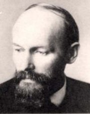
Pokus se zarecitovat Morgensternovu báseò Noèní rybí zpìv.
Jak byly vytvoøeny Nové názvy navr�ené pøírodì? Doká�eš rozpoznat rostliny a zvíøata, která se za nimi skrıvají? Vymysli další.
Napiš vlastní nonsensovou báseò.
|
Karl May (1842-1912)
Nìmec Karl May strávil 8 let ve vìzení za podvody. Pozdìji se �ivil jako novináø a spisovatel. Napsal pøes 70 svazkù dobrodru�nıch próz, vìtšinou z exotického prostøedí (Divokı západ, Pøední vıchod). Dìjištì svıch románù ovšem nenavštívil – vystaèil si s informacemi z dobového tisku a rùznıch knih. K jeho nejpopulárnìjším románùm patøí Vinnetou, Old Surehand, Poklad na Støíbrném jezeøe, Divokım Kurdistánem nebo Karavana otrokù.
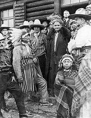
Karl May mezi indiány
|
Karl May: Vinnetou, Rudı gentleman
Evropan Old Shatterhand vymìøuje �eleznici na Divokém západì a s pøítelem Samem Hawkensem za�ívá øadu dobrodru�ství. Bìlošskı uèitel indiánù zvanı Klekí-petra seznámí Old Shatterhanda s náèelníkem Apaèù Inèu-èunou a jeho synem Vinnetouem. Kdy� indiáni zjistí, �e je bílé tváøe chtìjí pøipravit o pùdu, po�adují, aby odešli. Opilı zloduch Rattler bezdùvodnì zastøelí Klekí-petru. Bìloši se spojí s indiánskım kmenem Kajovù a díky léèce zajmou Inèu-èunu i Vinnetoua, ale Old Shatterhand je osvobodí. Sám se ovšem vzápìtí ocitá v zajetí Apaèù. Kdy� Vinnetou zjistí, �e mu Old Shatterhand zachránil �ivot, spøátelí se s ním a uèí ho dovednostem indiánù. Rattler je po zásluze potrestán. Po èase se Old Shatterhand spoleènì s Apaèi vypraví na dlouhou cestu, pøi které narazí na zlosyna Santera, kterı tou�í po zlatém pokladu indiánù. Zabije Inèu-èunu i jeho dceru Nšo-èi. Vinnetou s Old Shatterhandem vraha pronásledují, ale tomu pomohou Kajovové.
May psal své pøíbìhy s napínavım dìjem pøedevším pro mladé ètenáøe a sna�il se je jejich prostøednictvím vychovávat. Vzorem mìl bıt kladnı hrdina, kterı bojuje proti zlu a bezpráví. May se staví proti rasismu a násilí. Postavy indiánù vynikají svou moudrostí, úspornou mluvou a sepìtím s pøírodou.
|
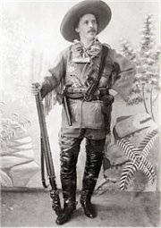
Karl May jako Old Shatterhand
Charakterizuj jednotlivé postavy, které vystupují v ukázce. Jakı je Sam Hawkens?
Kdo je vypravìèem tohoto pøíbìhu?
Èteš mayovky? Proè? Co se ti na nich líbí? Co by se jim dalo vytknout?
|
Rudyard Kipling (1865-1936)
Anglickı spisovatel Kipling se narodil v Bombaji, nìkolik let strávil v Londınì a nakonec se odstìhoval za svou man�elkou do USA. Jako novináø hodnì cestoval. Psal básnì o námoønících a vojácích nebo povídky z indického prostøedí. Pro dìti napsal Knihy d�unglí. V roce 1907 získal Nobelovu cenu za literaturu.
O èem vyprávìjí další povídky Knih d�unglí – Bílı lachtan, Rikki-tikki-tavi nebo Túmé, miláèek slonù?
|
Rudyard Kipling: Knihy d�unglí
Prózy, které Kipling zaøadil do dvou svazkù Knih d�unglí, líèí �ivot zvíøat i lidí v exotickém prostøedí indické d�ungle. Nejznámìjší je pøíbìh chlapce Mauglího, kterého vychovala divoká zvíøata a nauèila ho znát „zákon d�ungle“. Mauglí �ije ve vlèí smeèce. Vychovává ho medvìd Bálú a panter Baghíra. Jejich nejvìtším nepøítelem je tygr Šer Chán a opice, které Mauglího unesou. Naštìstí ho zachrání had Ká a Mauglí se po mnoha peripetiích vrací k lidem.
|
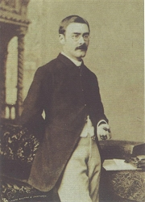
Rudyard Kipling
|
Jules Verne (1828-1905)
Francouzskı prozaik Jules Verne [�il vern] pracoval jako burzovní makléø. V jeho románech se mísí pouèení se zábavou a dobrodru�né prvky s vìdecko-fantastickımi. Vìtšina z nich je souèástí volného cyklu Podivuhodné cesty, kterı zahrnuje 65 titulù – Pìt nedìl v balónì, Cesta do støedu Zemì, Ze Zemì na Mìsíc, Tajemnı hrad v Karpatech, Robur dobyvatel, Vynález zkázy, Dìti kapitána Granta, Dvacet tisíc mil pod moøem, Tajuplnı ostrov, Patnáctiletı kapitán, Dva roky prázdnin, Ocelové mìsto, Cesta kolem svìta za 80 dní nebo Matyáš Sandorf, Novı hrabì Monte Cristo.
Které z uvedenıch románù obsahují vìdecko-fantastické prvky? Jaké?
Které romány jsou spíše dobrodru�né? Doká�eš je pøevyprávìt?
Ve kterıch románech vystupuje kapitán Nemo? Charakterizuj tuto literární postavu.
|
Jules Verne: Paøí� ve 20. století
Antiutopie Paøí� ve 20. století líèí pøetechnizovanı a odlidštìnı svìt v roce 1960, tedy zhruba 100 let po tom, kdy Verne svou knihu napsal. Technickému rozkvìtu musela ustoupit kultura a negativnì poznamenal i mezilidské vztahy. Upadla znalost klasickıch jazykù (øeètina, latina), velcí spisovatelé 19. století jsou zapomenuti. Mechanizace postihla také umìleckou tvorbu – pokleslé a nepùvodní divadelní hry vyrábí na objednávku monopol zvanı Velké skladištì dramat. Hlavní hrdina Michel Dufrénoy je nucen zaøadit se do této spoleènosti, ale všichni ho pova�ují za naprosto neschopného, a tak musí �ivoøit na jejím okraji.
Nakladatel Hetzel odmítl tento román vydat, proto�e neodpovídal jeho vıchovnım zámìrùm. Nejprve se zdálo, �e se pùvodní rukopis ztratil, ale náhodou byl objeven v uzamèeném trezoru. Kniha poprvé vyšla a� roku 1994.
|
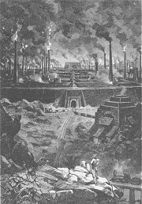
Benett: Ocelové mìsto
Které objevy a vynálezy Verne pøedpovìdìl? Zmılil se v nìèem?
Popiš svìt za 100 let. Jak se zmìní lidé? Které instituce vzniknou nebo zaniknou? Co nového pøinese vìda?
Jak se podle tebe �ilo lidem pøed 100 lety?
Bez kterıch vynálezù se nedoká�eš obejít?
Srovnej tuto antiutopii s klasickımi utopiemi Thomase Mora a dalších autorù.
|
Herbert George Wells
(1866-1946)
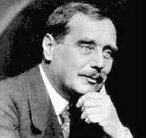
Anglickı spisovatel Herbert George Wells [hérbrt d�órd� velz] patøí k zakladatelùm vìdecko-fantastické literatury (sci-fi). Napsal romány Stroj èasu, Ostrov doktora Moreaua, Neviditelnı, Válka svìtù, První lidé na Mìsíci, Moderní utopie nebo Lidé jako bozi. Hlásil se k darwinismu a mìl blízko k utopickım socialistùm. Budoucnost lidstva vidìl v technickém pokroku, vıchovì a kolektivismu. Ve svıch fantaziích varoval pøed mo�ností zneu�ití vìdy.
|
Herbert George Wells: Válka svìtù
Román Válka svìtù popisuje nerovnı souboj dvou civilizací. Mnohem vyspìlejší obyvatelé Marsu napadnou Zemi. První mar�anskı vısadek smìøuje do Anglie. Kolem kráteru po domnìlém meteoritu se shromá�dí nìkolik zvìdavcù, ale Mar�ané je spálí svımi paprskomety. S pomocí obrovskıch strojù a smrtícího èerného dımu nièí vše �ivé a dobıvají Londın. Jakıkoliv odpor armády je marnı. Lidstvu hrozí, �e bude Mar�any zotroèeno a �e èlovìk bude chován jako pouhé domácí zvíøe. Naštìstí útoèníky zahubí pozemské bakterie, které lidem nevadí, ale pro Mar�any jsou smrtelné. Vypravìè pova�uje chování Mar�anù za logické – ani Evropané si nepoèínali pøi dobıvání novıch území lépe a vìtšina lidí se nezajímá o pocity mravencù nebo zvíøat...
Podle tohoto románu napsal americkı re�isér Orson Welles (1915-1985) rozhlasovou hru, její� uvedení 30.10.1938 vzbudilo paniku ve Spojenıch státech americkıch. Posluchaèi si toti� mysleli, �e Zemi skuteènì napadli mimozemš�ané...
|
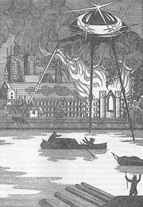
Nakresli Mar�ana podle popisu v ukázce.
Jak si pøedstavuješ prùbìh pøípadného setkání s mimozemš�any?
Kteøí spisovatelé pøed Wellsem a po nìm psali o obyvatelích jinıch planet, Slunce nebo Mìsíce? V èem se jejich pøíbìhy liší od Wellsova?
Wellsùv román Stroj èasu líèí spoleènost v roce 802 701. Jak si pøedstavuješ �ivot v tomto roce? Bude lepší nebo horší? Proè?
|
Internetové stránky
Prerafaelité, obrazy
Prerafaelité, informace
Children's Literature
Fantastic Fiction
Scandinavian Studies
Andersen
Andersen
Andersen
Carroll
Carroll
Carroll
Carroll, fotografie
Carroll: Alice's Adventures in Wonderland, ilustrace Johna Tenniela
Lear
Lear
Morgenstern
Morgenstern
Morgenstern: Veliké Lalulá
Karl May
Karl May
Karl May
Karl May
Blumfeld: Karel May, èlánek
The Kipling Society
The Nobel Prize Internet Archive, Kipling
The Dutch Jules Verne Society
Verne: Robur Dobyvatel
Filmy
Nìco z Alenky, re�ie J.Švankmajer
Zfilmovány byly Andersenovy a Carrollovy pohádky i pøíbìhy Maye, Kiplinga, Verna nebo Wellse.
|
Doporuèená èetba
Andersen, H.Ch.: Pohádky a povídky (5 svazkù)
Bìlousov, Roman: Hledá se kapitán Nemo, pøel. V.Bystrov, Lidové nakladatelství, Praha 1988
Boreckı, Vladimír: Teorie komiky, Hynek, Praha 2000
Brandis, Jevgenij: Snílek Jules Verne, pøel. I.Král, Lidové nakladatelství, Praha 1981
Carroll, Lewis: Alenèina dobrodru�ství v øíši divù a za zrcadlem, pøel. J.Císaø, Aurora, Praha 1996
Carroll, L.: Alenka v kraji divù a za zrcadlem, pøel. Skoumalovi, Albatros, Praha 1970
Carroll, L.: Zamotanı pøíbìh, pøel. L.Pick, Volvox globator, Praha 1996
Hron Metánovskı, Jakub: Nedorozumìní s rozumem aneb Konba �ijby, Paseka, Praha 1995
Hurych, Ervín: Dìjiny svìtového humoru, Marsyas, Praha 1994
Janatka, J.M.: Neznámı Jules Verne, Mladá fronta, Praha 1959
Kipling, Rudyard: Knihy d�unglí, pøel. Skoumalovi, Olympia, Praha 1984
Klee, Paul: Èáry, pøel. I.Wernisch, Odeon, Praha 1990
Lear, Edward: Velká kniha nesmyslù, pøel. A.Pøidal, Praha 1998
Lottman, Herbert R.: Jules Verne, �ivot a dílo klasika sci-fi, pøel. V.Š�ovíèková-Heroldová, Brána, Praha 1998
May, Karel: Já, náèelník Apaèù, pøel. J.Stach, Olympia, Praha 1992
May, Karl: Romány (41 svazkù)
May, Karl: Vinnetou (2 svazky), pøel. O.Flögl, Návrat, Brno 1993
Morgenstern, Christian: Beránek mìsíc, pøel. J.Hiršal, Odeon, Praha 1965
Morgenstern, Ch.: Ferda Páv a všelijaká zvíøata, pøel. J.Hiršal, Baobab, Praha 2002
Morgenstern, Ch.: Stupnì, pøel. A.Mrázková, Vyšehrad, Praha 2002
Neff, Ondøej: Podivuhodnı svìt Julese Verna, Mladá fronta, Praha 1978
Nonsens, usp. Hiršal, Grögerová, Mladá fronta, Praha 1997
Spisy Julese Verna (11 svazkù)
Verne, Jules: Paøí� ve 20. století, pøel. R.Steklaèová, Tichá Byzanc, Praha 1995
Wells, Herbert George: Stroj èasu, pøel. J.Mertinová, Lika, Praha 1992
Wells, H.G.: Válka svìtù a jiné pøíbìhy z neskuteèna, pøel. V.Svoboda, Albatros, Praha 1988
|
Vypracuj písemnı referát o nìkteré z uvedenıch knih.
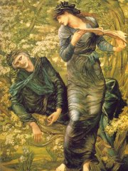
Burne-Jones: Omámení Merlina
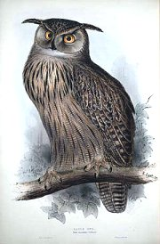
Learova kresba
|
|